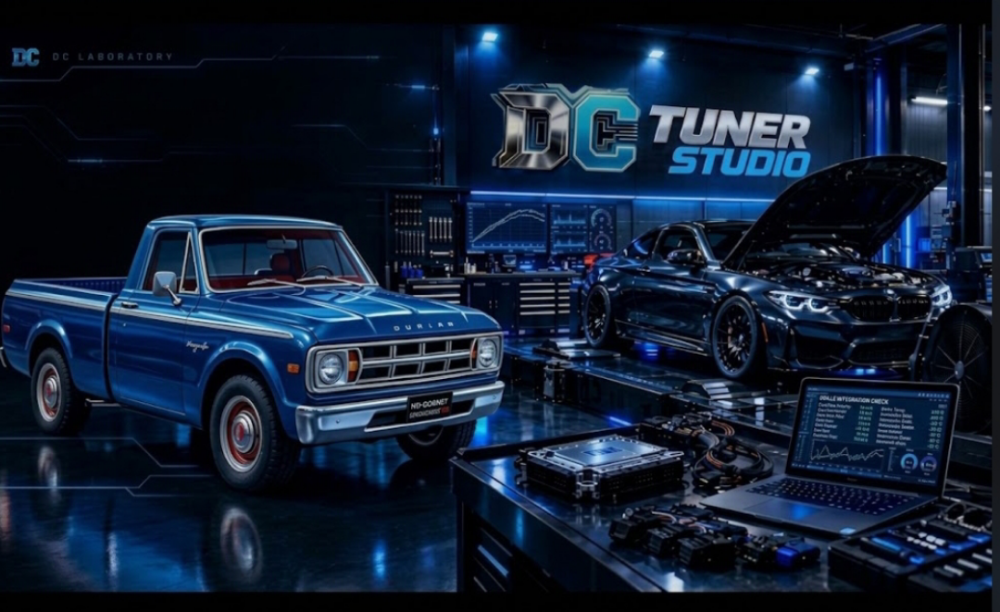
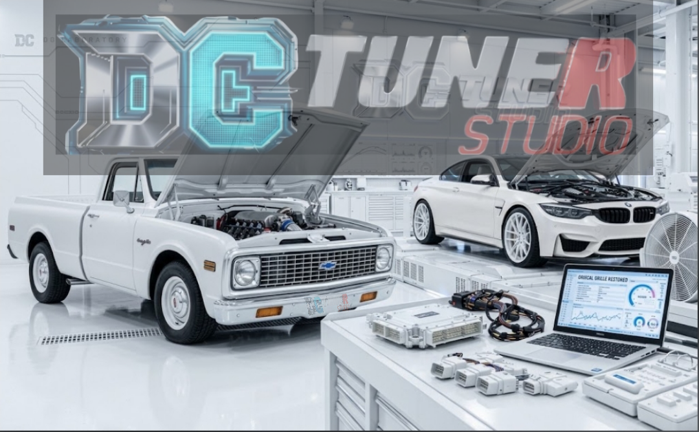
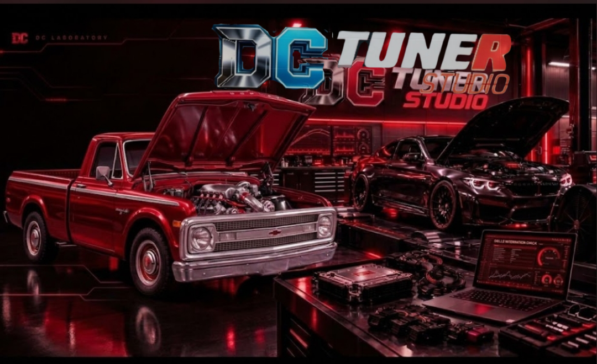
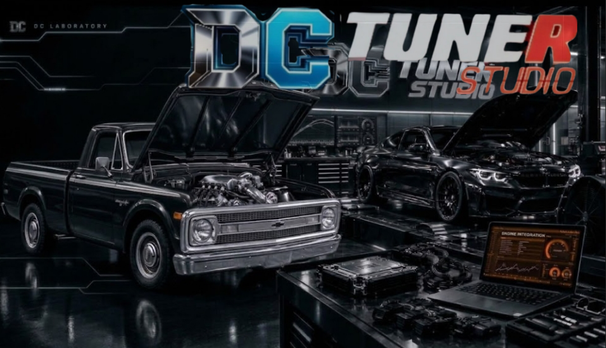

DC LABORATORY · GUÍA DE PLATAFORMAS
DCtuneRstudio por versión
Elige el paquete que corresponde al sistema y a la arquitectura de tu equipo. Aquí están reunidas las versiones para PC de 32 y 64 bits, el portal web de DC Tuner Studio y los paquetes para Raspberry Pi. Las imágenes cambian con cada sección y tiñen suavemente el fondo mientras recorres la página.
01 · AZUL / PC DE 32 BITS
DC Tuner Studio 32 bits
Para computadoras cuyo sistema operativo sea de 32 bits: Windows x86 o Linux i386. Los paquetes incluyen los componentes locales de DCtuneRstudio para trabajar con la interfaz y el puente serie; elige Windows o Linux y confirma que la arquitectura del sistema coincide antes de instalar.

Compatibilidad: Windows 32 bits requiere Python x86. En Linux se necesita Python 3, Flask, pySerial y permisos para el puerto serie. Para diagnóstico real, conecta una ECU compatible mediante USB/serie; la página no inventa lecturas de motor.
02 · BLANCO / VERSIÓN WEB
DC Tuner Studio en la web
Abre el portal web oficial desde el navegador para consultar DC Tuner Studio y acceder a sus descargas. El sitio es una página estática: los paquetes que ofrece son ejecutables para Linux y Windows de 64 bits. La página web no puede acceder por sí sola al USB o al puerto serie local; para trabajar con una ECU real se utiliza el puente local incluido en el paquete correspondiente.

Portal web: se abre en línea sin instalar un servidor de página. Para telemetría de una ECU, consulta los requisitos del paquete y conecta el equipo con el puente local; el portal público no tiene acceso al hardware de tu computadora.
03 · ROJO / PC DE 64 BITS
DCtuneRstudio 64 bits
Para estaciones actuales con Windows x64 o Linux AMD64. Esta arquitectura permite instalar el paquete de 64 bits correspondiente y utilizar el puente local, la interfaz de diagnóstico, la telemetría y las herramientas de revisión de tablas y registros que forman parte del proyecto. Selecciona el sistema operativo exacto antes de descargar.

Antes de instalar: AMD64 corresponde a Linux de 64 bits y x64 a Windows de 64 bits. Los paquetes ZIP y TAR.GZ se sirven directamente desde la carpeta de descargas del repositorio DCtuneRstudio.
04 · NEGRO / RASPBERRY PI
DCtuneRstudio Raspberry Pi
Convierte una Raspberry Pi compatible en una estación compacta para el entorno DCtuneRstudio. Hay paquetes para Raspberry Pi OS de 64 bits (ARM64) y de 32 bits (ARMv7). Conecta la ECU por USB/serie, confirma primero la arquitectura instalada y sigue las instrucciones incluidas en el paquete para configurar el puente local.

Requisitos: Raspberry Pi OS debe coincidir con ARM64 o ARMv7. El puente local requiere Python 3, Flask, pySerial y permisos de acceso al puerto serie. No instales un paquete ARM en una PC x86 ni elijas ARM64 si tu sistema es de 32 bits.